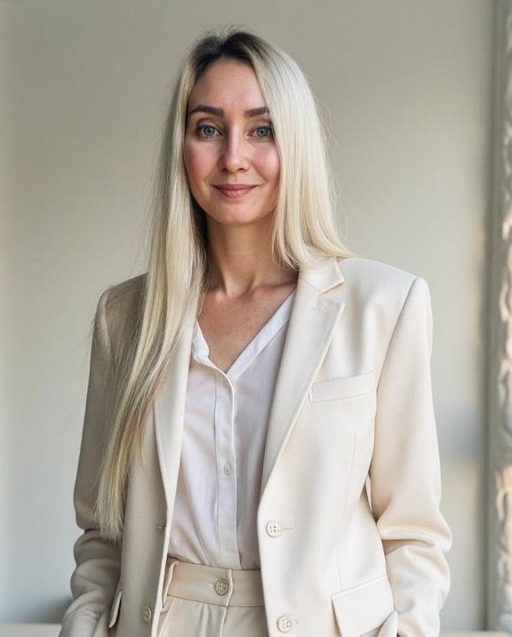
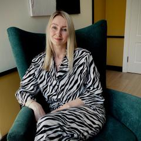

Онлайн
6 000 ₽
Кризисный психологпсихотравматолог

Здесь вы найдёте ясность и опору
Как выйти из нарциссических сценариев и перестать играть по чужим правилам
Специалист по работе с жертвами НРЛ
Бесплатный гайд Манипуляции, разрушающие личность01 запросы
Травма от абьюза и насилия меняет восприятие себя и мира. Вы можете годами жить с чувством вины, страха или одиночества, даже если внешне всё «нормально».
Но это не ваша вина — это последствия травмы.
02 первая встреча
На первичной диагностической сессии мы познакомимся, и я уделю вам всё своё внимание, чтобы понять, что сейчас для вас важно, и как я могу вам помочь.
Вместе мы выявляем проблемные зоны, определяем деструктивные паттерны поведения и разрабатываем стратегию выхода из сложившейся ситуации.
За 70 минут мы вместе исследуем вашу ситуацию, чтобы выявить причины ваших трудностей и обнаружить ваши скрытые ресурсы. В конце сессии вы получите конкретные рекомендации о том, как двигаться дальше и на что обратить особое внимание.
Диагностическая сессия · 70 минут
Онлайн
6 000 ₽
Очно
7 000 ₽

Записаться на консультацию